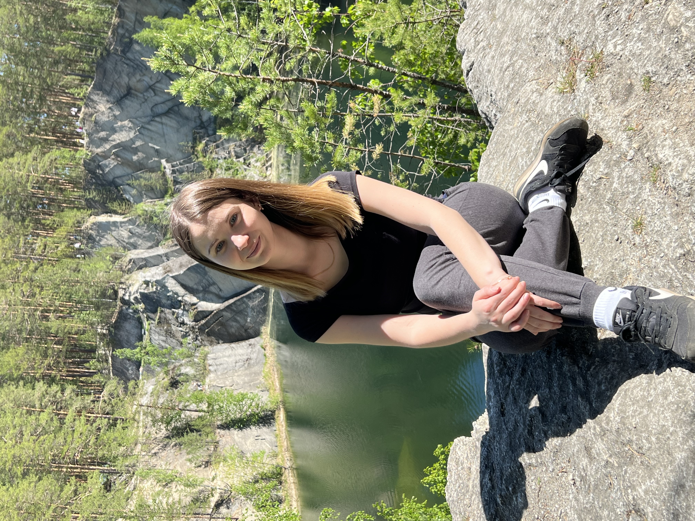
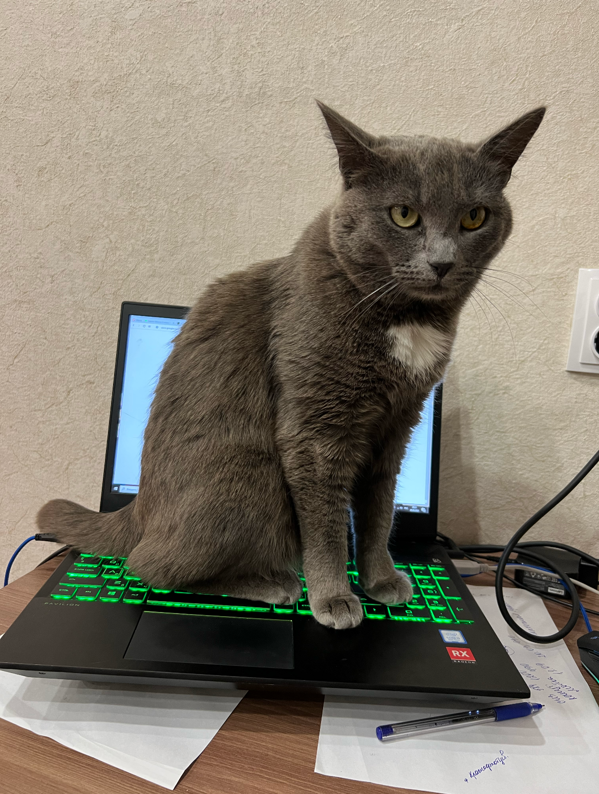

Меня зовут Мусина Анна.
Я из города Екатеринбург. Мне 28 лет. У меня хорошо развиты коммуникационные навыки, легко нахожу общий язык с разными людьми.

Я люблю проводить время на природе и мне нравится путешествовать. Люблю узнавать что-то новое, развиваться и двигаться дальше. В свободное время занимаюсь саморазвитием, изучаю новую и дополнительную литературу.
